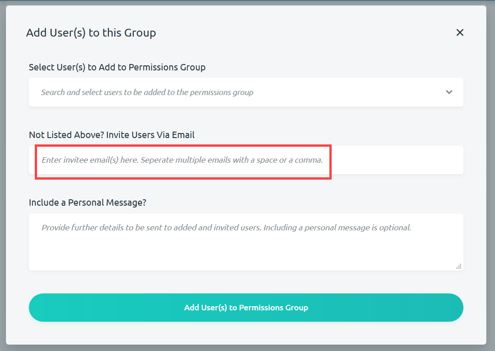

Editing a Project
If you have the correct permissions to edit a project, then there are multiple ways to get to the page for editing the info for your project. Once you navigate to the Edit Project page, you are able to change the name, description and permissions for the project. If you want to edit other parts of the project, you will have to go to the individual form or record that you wish to edit.
Navigating the Edit Project page
There are three options you can follow to navigate to the Edit Project page:
-
If you made your project available on the dashboard as a project block, then you are able to access the Edit Project page directly from here. Simply click on the Edit Project Info button at the bottom-left of the project block.
-
Another option is to navigate to your project list page. From this page you'll be able to select the Edit Project Info button at the bottom-left of each block containing your project.
-
The last option is available when you navigate to the project that you want to edit. Opening up either of the following menu pages will give you the option to click Edit Project Info.
Editing a Project
After Navigating to the Edit Project page, you have the option to edit certain aspects of your project including your project's name, description and its permissions. You also have the option to archive or delete your project, though the specifics of those actions will not be discussed in this section. Follow these steps to edit the name, description and permissions of your project:
-
Navigate to the Edit Project page.
-
Make any desired edits to the project name and description by editing the entered text.
-
You may also edit the project permissions of users within your project by clicking on the Go To Project Permissions Page button. For more information on editing project permissions, go to the next section.

-
Once all of your edits are finished, click the green Update Project button.
Editing Project Permissions
Navigating to the Project Permissions page (step 3 in the previous section), you are able to manage the permissions that allow users to create, edit and/or delete forms in your project. You are able to select particular form permissions for users by checking the boxes next to the permissions located in permissions groups.
In order to add new users to a permission group follow these steps:
-
The Admin Group will be the first block in the Project Permissions page. These will likely be users who have full permissions to create, edit and delete forms. Below the admin block is the Default Group block where new users with new permissions can be added. Click on Default Group to open it up.
-
Once the block is open, click Add New User(s) to Group to add new users to this group.
-
A box will appear prompting you to Select User(s) to Add to Permissions Group. Click on the Search and Select Users to be Added to the Permission Group drop-down list. Select the users you wanted added to this group from the list that appears below the box. You may also remove accidently selected users by clicking on the x next to their name.
-
You may also invite users for your project using their email address. Separate multiple emails with a space or column.

-
You may include a personal message that will be included in the email notifying the users that they have been given particular project permissions. Click Add User(s) to Permissions Group when done.
Creating a New Permissions Group for a Project
You may also create new permissions group for your project, if needed. Follow these steps:
-
From the Project Permissions page (see previous sections), you may select Create a New Permissions Group located just above the admin group.
-
Kora will prompt you for information on the new permissions group. Fill out a new name for the group.
-
Select the particular form permissions that you want the new group to have by checking the boxes next to the particular permissions you want to give.
-
Then select the particular users that you want included in this permission group (Steps 3-5 in the previous section), and finish the group by selecting Create New Permission Group.
-
Your new permission group will appear as the bottom block on the Project Permissions page.